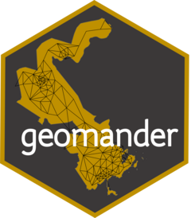

geomander 
Focuses on creating data sets and other tools that help make understanding gerrymandering faster and easier. Designed for easy preparation to run simulation analysis with the R package redist, but is aimed at the geographic aspects of redistricting, not partitioning methods. Most of these tools are gathered from seminar papers and do not correspond to a single publication.
Installation
You can install the released version of geomander from CRAN with:
install.packages("geomander")And the development version from GitHub with:
# install.packages("devtools")
devtools::install_github("christopherkenny/geomander")Examples
A very common task is aggregating block data to precincts.
library(geomander)
library(tidyverse)
#> ── Attaching core tidyverse packages ──────────────────────── tidyverse 2.0.0 ──
#> ✔ dplyr 1.1.4 ✔ readr 2.1.4
#> ✔ forcats 1.0.0 ✔ stringr 1.5.1
#> ✔ ggplot2 3.4.4 ✔ tibble 3.2.1
#> ✔ lubridate 1.9.3 ✔ tidyr 1.3.0
#> ✔ purrr 1.0.2
#> ── Conflicts ────────────────────────────────────────── tidyverse_conflicts() ──
#> ✖ dplyr::filter() masks stats::filter()
#> ✖ dplyr::lag() masks stats::lag()
#> ℹ Use the conflicted package (<http://conflicted.r-lib.org/>) to force all conflicts to become errors
# load precincts
data('va18sub')
# create block data
block <- create_block_table(state = 'VA', county = '087')
# match the geographies
matches <- geo_match(from = block, to = va18sub)
# Aggregate
prec <- block2prec(block_table = block, matches = matches)Other important tasks include breaking data into pieces by blocks underlying them.
library(geomander)
library(tidyverse)
# load precincts
data("va18sub")
# subset to target area
va18sub <- va18sub |> filter(COUNTYFP == '087')Then we can get common block data:
block <- create_block_table(state = 'VA', county = '087') And estimate down to blocks
disagg <- geo_estimate_down(from = va18sub, to = block, wts = block$vap, value = va18sub$G18USSRSTE)For more information, see the documentation and vignettes, available at https://christophertkenny.com/geomander/